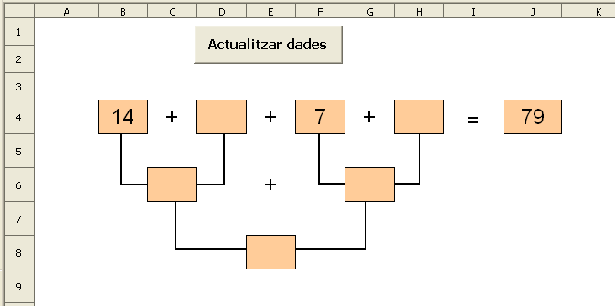

Presentació gràfica de l'activitat.

Funcions que es fan servir en aquesta activitat
Objectiu de l'activitat
Completar una suma en arbre.
Desenvolupament de l'activitat
1. Obrir el fitxer M5 i afegir un nou full amb el nom de M5P6 suma en arbre.
2. Assignar a les B4, D4, F4, H4, J4, C6, G6 i E8 els següents atributs:
3. Escriure el signe de sumar a les següents cel·les: C4, E4, G4 i E5.
4. Les línies d'enllaç es fan amb l'eina del polígon de la barra d'eines de dibuix.
5. Escriure a la cel·la B4: =SI($A$1=0;ALEATENTRE(10;20))
6. Escriuire a la cel·la F4: =SI($A$1=0;ALEATENTRE(1;9))
7. Esciure a a la cel·la J4: =SI($A$1=0;ALEATENTRE(40;90))
8. Escriure a la cel·la K4: =SI(I(B4+D4+F4+H4=J4;C6+G6=J4;E8=J4);"bé";"")
10. Crear un botó de prémer de Controls de formulari i assignar-li la macro feta anteriorment.
11. Validar la cel·la A1 per al valor 0.
12. Protegir les cel·les que convingui.
13. Protegir la posició i la mida de les línies poligonals.
14. Ocultar o fer no visibles les cel·les que convingui.
15. Comprovar que l'activitat funcioni correctament.
16. Desar el fitxer M5.